Learning adaptive controller for hydraulic machinery automation
한줄 요약 — 이 연구는 단일 장비별 LUT/PID 재튜닝 대신 16차원 잠재변수로 유압 특성을 표현하는 범용 RL 속도제어기와 온라인 energy-based identification을 결합해 서로 다른 굴착기·벌목기 관절을 8~10분 데이터만으로 적응시키고 말단 궤적을 추종한다.
1.연구 배경 및 동기
장비마다 다른 유압 비선형성을 짧은 현장 데이터로 흡수하는 범용 제어
굴착기와 벌목기의 pilot valve 입력은 관절 속도로 곧바로 이어지지 않는다. 공급·탱크 압력과 부하압, 밸브 유량계수, 실린더 체적, 마찰, 관성, 다단 pilot 회로가 얽히고 최대 0.6초 수준의 지연과 입력의 25%에 이르는 dead zone도 나타날 수 있다. 같은 기종이라도 유온, 마모, 탑재 도구, 유압회로 상태에 따라 응답이 달라진다. 이런 조건에서 위치 PID와 입력-속도 lookup table을 장비·관절마다 수작업 보정하면 새 플랫폼으로 옮길 때마다 긴 튜닝과 안전한 시험동작이 필요하다.
기존 학습 제어는 정확한 장비 모델을 식별하거나 한 장비의 데이터를 충분히 모은 뒤 policy를 재학습하는 경우가 많다. 단순 domain randomization은 다양한 동역학을 평균적으로 견디지만, 어떤 장비에 배치됐는지 명시적으로 식별하지 않으므로 보수적인 제어가 되기 쉽다. 논문은 먼저 첫 원리에서 유도한 저차 유압 모델의 파라미터, dead zone, 지연, 비선형 입력 맵을 넓게 무작위화한다. 그 위에서 16차원 잠재 동역학 벡터를 조건으로 받는 universal policy를 학습하고, 실제 장비의 짧은 rollout이 어느 잠재벡터와 가장 일치하는지 energy function으로 온라인 추정한다.
목표는 고속 굴착력 제어가 아니라 저속 자유공간 관절 속도 추종을 여러 유압장비에 빠르게 이식하는 것이다. 실험은 12톤 보행식 굴착기 HEAP과 4.5톤의 오래된 forestry machine SAHA에서 수행한다. HEAP에는 능동 버킷과 전신 역기구학을 포함한 end-effector 경로를, SAHA에는 backlash가 큰 관절과 수동 도구 조건을 적용한다. 동일한 학습 구조가 두 장비에서 작동한다는 점이 논문의 주된 일반화 주장이다.
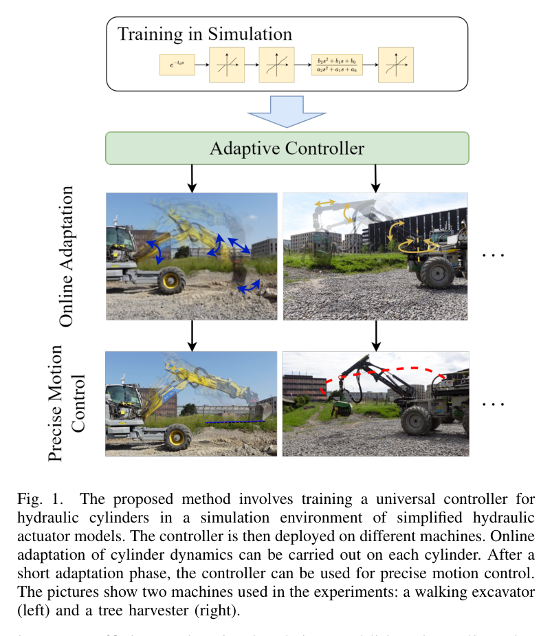
원문 Figure 1 · PDF p.2 — Fig. 1. The proposed method involves training a universal controller for hydraulic cylinders in a simulation environment of simplified hydraulic actuator models. The controller is then deployed on different machines. Online adaptation of cylinder dynamics can be carried out on each cylinder. After a short adaptation phase, the controller can be used for precise motion control. The pictures show two machines used in the experiments: a walking excavator (left) and a tree harvester (right).
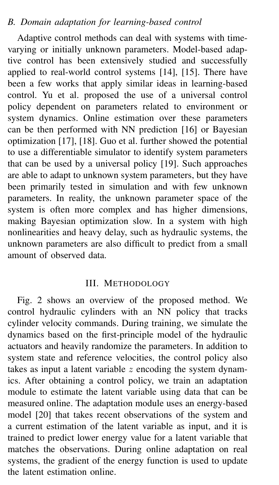
원문 Figure 2 · PDF p.3 — Fig. 2 shows an overview of the proposed method. We control hydraulic cylinders with an NN policy that tracks cylinder velocity commands. During training, we simulate the dynamics based on the first-principle model of the hydraulic actuators and heavily randomize the parameters. In addition to system state and reference velocities, the control policy also takes as input a latent variable z encoding the system dynam- ics. After obtaining a control policy, we train an adaptation module to estimate the latent variable using data that can be measured online. The adaptation module uses an energy-based model [20] that takes recent observations of the system and a current estimation of the latent variable as input, and it is trained to predict lower energy value for a latent variable that matches the observations. During online adaptation on real systems, the gradient of the energy function is used to update the latent estimation online.
선행 연구의 한계
장비별 lookup table과 PID는 온도·마모·하중 변화 때 재튜닝이 필요하고 다른 유압회로로 직접 이전하기 어렵다.
정확한 시스템 식별은 압력·유량 계측과 충분한 안전 시험이 필요하며, 다단 유압회로의 모든 비선형성을 모델링하기 어렵다.
단순 domain-randomized policy는 대상 장비의 실제 동역학을 식별하지 않아 넓은 분포에서 평균적으로 안전한 동작에 머물 수 있다.
온라인 policy 재학습은 현장 데이터 편향과 안전 탐색 문제 때문에 즉시 배치하기 어렵다.
이 연구의 기여
부하압 동역학에서 출발한 저차 실린더 모델에 지연, dead zone, 마찰, piecewise monotonic 입력 맵을 무작위화해 장비군 학습환경을 만든다.
rollout 전이를 평가하는 energy function을 잠재변수에 대해 convex하도록 학습하고, 배치 후 1초마다 최근 데이터를 이용해 잠재벡터를 갱신한다.
한 번 학습한 구조를 HEAP과 SAHA에 적용하여 수분 내 적응, 직선·원형 경로, grading 동작의 실차 성능을 보고한다.
2.방법론 및 시스템 구성
시뮬레이터는 밸브 입력 d가 load flow를 만들고, 유량 차이가 load pressure를 변화시키며, 실린더 힘이 질량·외력·마찰을 가속하는 연쇄를 모델링한다. 저속 운용을 전제로 질량 변화가 고유진동수에 미치는 영향이 30% 미만인 범위에서 단순화하며, pilot time delay는 최대 0.6초, dead zone은 전체 입력의 최대 25%까지 무작위화한다. 실제 밸브 특성을 흉내 내기 위해 입력-유량 관계도 단조 piecewise-linear 함수로 샘플링한다.
universal policy는 최근 관측 이력, reference의 look-ahead, 16차원 latent z를 받아 pilot valve 명령을 낸다. 정책 MLP는 [64, 32] hidden units이며 PPO와 GAE로 학습한다. 보상은 속도 오차, 가속도 오차, 명령 부드러움을 지수형 항으로 구성한다. encoder는 -1.0부터 1.0까지 0.1 간격의 steady 입력과 step/sinusoid transient 응답을 CNN 및 [96, 64] MLP로 처리해 초기 z를 추정한다.
실제 배치 뒤에는 최근 상태-입력-다음 속도 전이를 energy model fθ가 평가한다. 모델은 올바른 z에서 관측 rollout의 에너지가 낮도록 학습되며 z에 관해 convex하게 구성된다. 장비에서는 매 1초마다 최근 16개 전이를 사용해 z를 gradient update하고, policy 자체 가중치는 고정한다. 따라서 데이터 수집 중에도 식별과 제어가 분리되고, 새 장비가 학습 분포 안에 있으면 몇 분 안에 그 응답에 맞는 latent를 찾는다.
처리 파이프라인
1
첫 원리 유압 모델과 domain randomization
load flow, pressure, 실린더 가속도의 연립관계를 저차 모델로 만들고 마찰계수·정마찰·외력·유량계수·체적, delay, dead zone, nonlinear valve map을 episode마다 바꾼다. 정책은 이 분포 전체에서 reference velocity를 추종하도록 학습된다.
2
잠재 조건부 universal policy 학습
관측 history와 reference look-ahead에 16D z를 연결하고 [64,32] MLP가 valve 명령을 출력한다. 3000개 병렬 환경, 200-step rollout을 사용하며 PPO+GAE가 속도·가속도 추종과 입력 smoothness를 동시에 최적화한다.
3
초기 동역학 encoder
여러 steady 명령과 step/sinusoid transient를 장비에 가해 응답 서명을 얻는다. CNN과 MLP가 이를 z의 초기값으로 압축하여 무작위 초기화보다 빠르고 안정적인 온라인 적응 시작점을 제공한다.
4
energy 기반 online latent adaptation
최근 16개 transition을 energy model에 넣고 z를 낮은 energy 방향으로 갱신한다. 1초 간격의 업데이트를 반복하되 universal policy는 고정하므로, 배치 중 policy drift를 피하면서 대상 장비 특성만 식별한다.
5
관절 속도에서 말단 경로로 통합
각 유압 관절은 적응형 속도제어기로 추종하고, 상위 계층은 end-effector reference를 역기구학으로 관절 reference로 바꾼다. feedforward 궤적과 위치 PID feedback을 더해 원·직선·grading 경로를 수행한다.
원문 수식과 의미
식 (1) load flow
Q_L=dK\sqrt{P_S-P_T-\operatorname{sign}(d)P_L}
pilot/valve 명령 d와 공급·탱크·부하 압력 차이가 실린더로 들어가는 유량을 결정하는 기본 관계다.
식 (2) load pressure dynamics
\dot P_L=\frac{4E}{V_t}(Q_L-\bar A\dot x)
유효 체적탄성계수 E와 총 체적 Vt 아래에서 유입 유량과 피스톤 운동이 부하압 변화를 만든다.
식 (3) cylinder motion
\ddot x=\frac{\bar A P_L+F_L+F_f}{m},\qquad F_f=-\mu\dot x-F_s\operatorname{sign}(\dot x)
저속 범위에서 밸브 입력부터 속도 응답까지의 핵심 불확실성을 무작위화하기 위한 축약 표현이다.
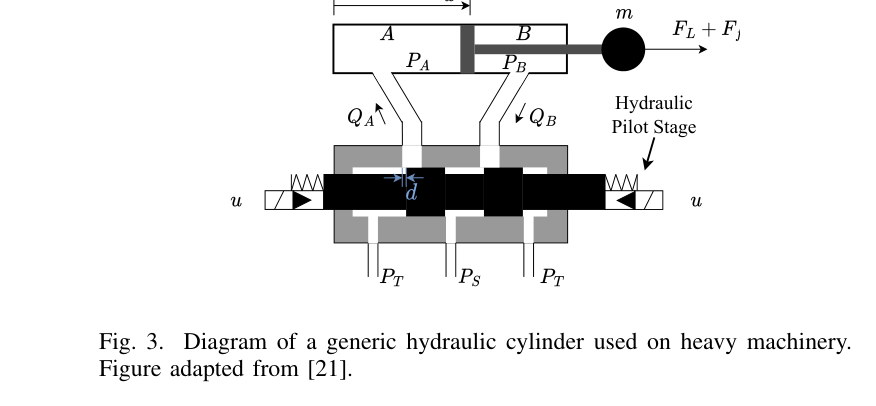
원문 Figure 3 · PDF p.4 — Fig. 3. Diagram of a generic hydraulic cylinder used on heavy machinery. Figure adapted from [21].
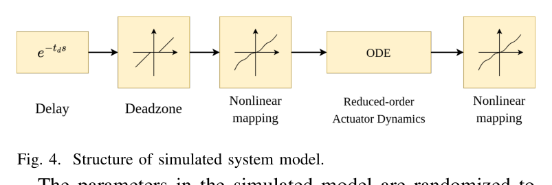
원문 Figure 4 · PDF p.4 — Fig. 4. Structure of simulated system model.
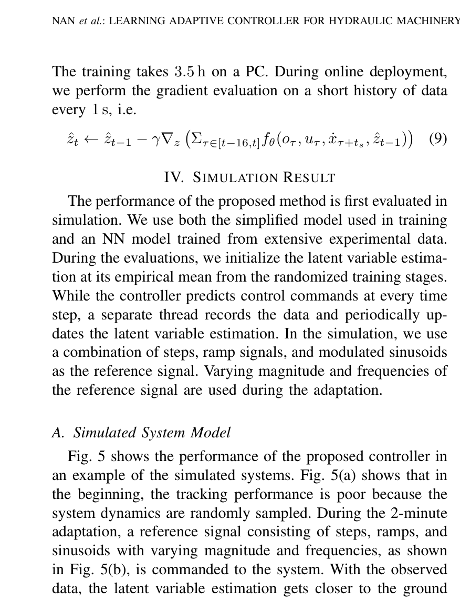
원문 Figure 5 · PDF p.6 — Fig. 5 shows the performance of the proposed controller in an example of the simulated systems. Fig. 5(a) shows that in the beginning, the tracking performance is poor because the system dynamics are randomly sampled. During the 2-minute adaptation, a reference signal consisting of steps, ramps, and sinusoids with varying magnitude and frequencies, as shown in Fig. 5(b), is commanded to the system. With the observed data, the latent variable estimation gets closer to the ground
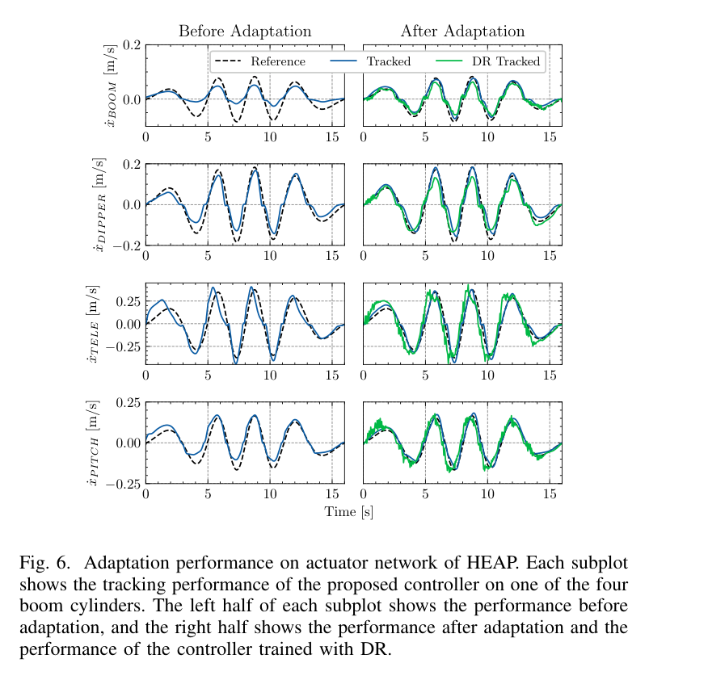
원문 Figure 6 · PDF p.6 — Fig. 6. Adaptation performance on actuator network of HEAP. Each subplot shows the tracking performance of the proposed controller on one of the four boom cylinders. The left half of each subplot shows the performance before adaptation, and the right half shows the performance after adaptation and the performance of the controller trained with DR.
3.핵심 기술
동역학 분포를 담는 16차원 latent controller
policy가 하나의 평균 장비만 학습하는 대신 현재 장비를 설명하는 z를 함께 입력받는다. z가 delay·dead zone·마찰 같은 개별 물리 파라미터와 일대일 대응할 필요는 없으며, reference tracking에 필요한 응답 차이를 표현하면 된다. 이 구조는 policy 재학습 없이 latent만 바꿔 두 장비와 여러 관절을 다루게 한다.
policy MLP hidden size는 [64, 32], latent는 16차원이다.
훈련 reference는 다양한 ramp를 사용해 정상상태와 과도응답을 모두 자극한다.
시뮬레이션 정책 학습은 i9-12900KF와 RTX 4090에서 약 0.5시간이다.
convex energy를 이용한 빠른 online identification
energy model은 관측 o_t, 명령 u_t, 다음 속도, z의 적합도를 수치화한다. z에 관해 convex하게 제한하여 gradient adaptation이 불안정한 지역최소로 빠질 위험을 줄인다. 최근 rollout만 쓰므로 마모나 온도처럼 시간에 따라 천천히 바뀌는 응답에도 주기적으로 갱신할 수 있다.
정책 출력은 장비 제조사별 고수준 API가 아니라 pilot valve 명령이며 관측은 속도 응답 중심이다. 상위 기구학 제어와 결합하면 같은 속도제어기를 여러 관절과 말단 경로에 재사용할 수 있다. HEAP에서 joint adaptation 후 원형·직선·grading을 실행하고, 다른 질량·연식·backlash를 가진 SAHA에서도 같은 절차를 적용했다.
HEAP 각 관절 적응은 안전을 위해 하나씩 수행하며 10분 이내다.
SAHA 적응은 8분이며 4.5톤의 오래된 유압장비와 수동 도구 조건이다.
end-effector 경로는 IK, feedforward trajectory, 위치 PID feedback으로 생성한다.
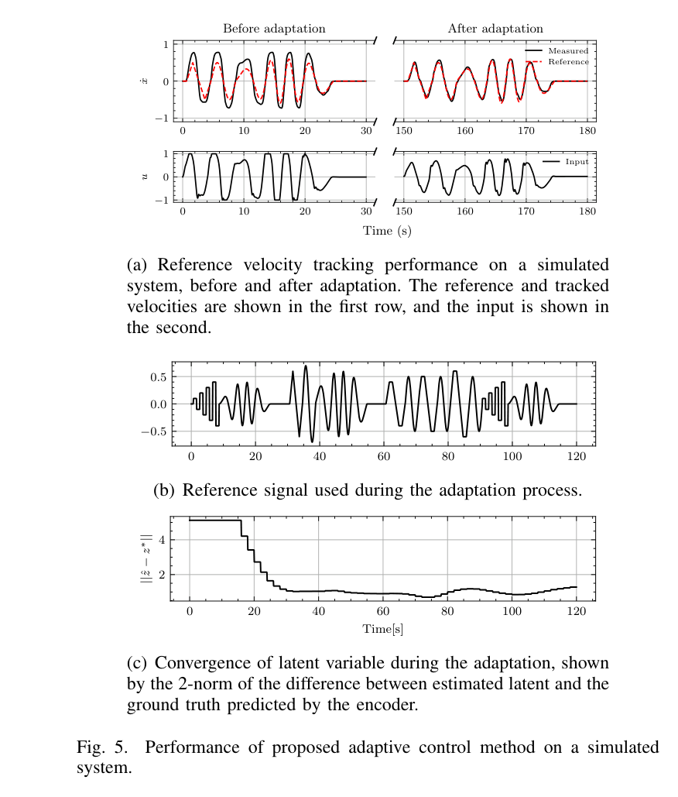
원문 Figure 5 · PDF p.6 — Fig. 5. Performance of proposed adaptive control method on a simulated system.
실차 1은 약 12톤 HEAP 보행식 굴착기, 실차 2는 약 4.5톤 SAHA forestry machine이다.
HEAP은 각 관절을 개별 적응한 뒤 상위 IK와 위치 feedback으로 말단 경로를 실행한다. SAHA는 오래된 회로와 큰 backlash, passive tool이라는 별도 조건을 갖는다.
실험 프로토콜
시뮬레이션에서 2분간 online latent adaptation을 수행하고 단순 domain randomization policy와 관절별 RMS tracking error를 비교한다.
HEAP은 10분 이내 관절별 적응 후 지름 1.5 m 원형 경로, 길이 2 m 직선 경로의 slow/fast 조건, 5 cm 관입 grading을 평가한다.
grading은 2 m 경로, 20 cm/s reference, 5 cm penetration으로 수행하고 SAHA는 8분 적응 뒤 최대 0.6 m/s waypoint trajectory를 수행한다.
비교 기준
latent adaptation이 없는 domain-randomized policy
Egli 등의 기존 HEAP arm controller
Leica 기반 기존 직선 경로 결과
동일 controller의 HEAP slow/fast 및 SAHA 이종장비 조건
평가 지표
관절 속도 RMS tracking error와 domain-randomization 대비 개선율
말단 평균·최대 경로 오차, 평균·최대 각속도
적응에 필요한 실차 시간
grading trajectory error와 직선 편차
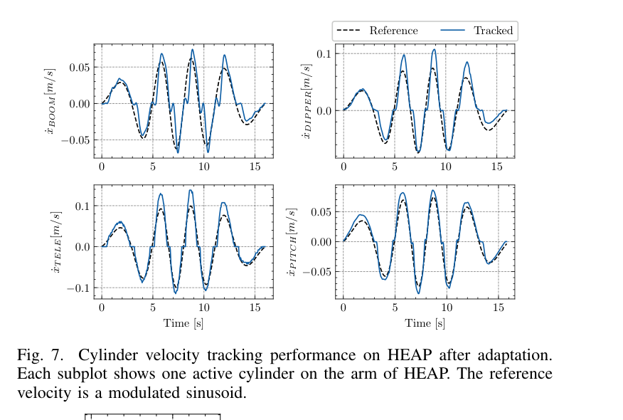
원문 Figure 7 · PDF p.7 — Fig. 7. Cylinder velocity tracking performance on HEAP after adaptation. Each subplot shows one active cylinder on the arm of HEAP. The reference velocity is a modulated sinusoid.
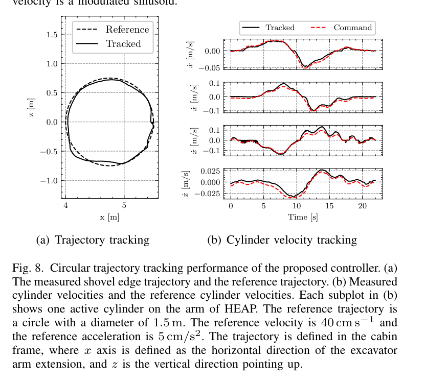
원문 Figure 8 · PDF p.7 — Fig. 8. Circular trajectory tracking performance of the proposed controller. (a) The measured shovel edge trajectory and the reference trajectory. (b) Measured cylinder velocities and the reference cylinder velocities. Each subplot in (b) shows one active cylinder on the arm of HEAP. The reference trajectory is a circle with a diameter of 1.5 m. The reference velocity is 40 cm s−1 and the reference acceleration is 5 cm/s2. The trajectory is defined in the cabin frame, where x axis is defined as the horizontal direction of the excavator arm extension, and z is the vertical direction pointing up.
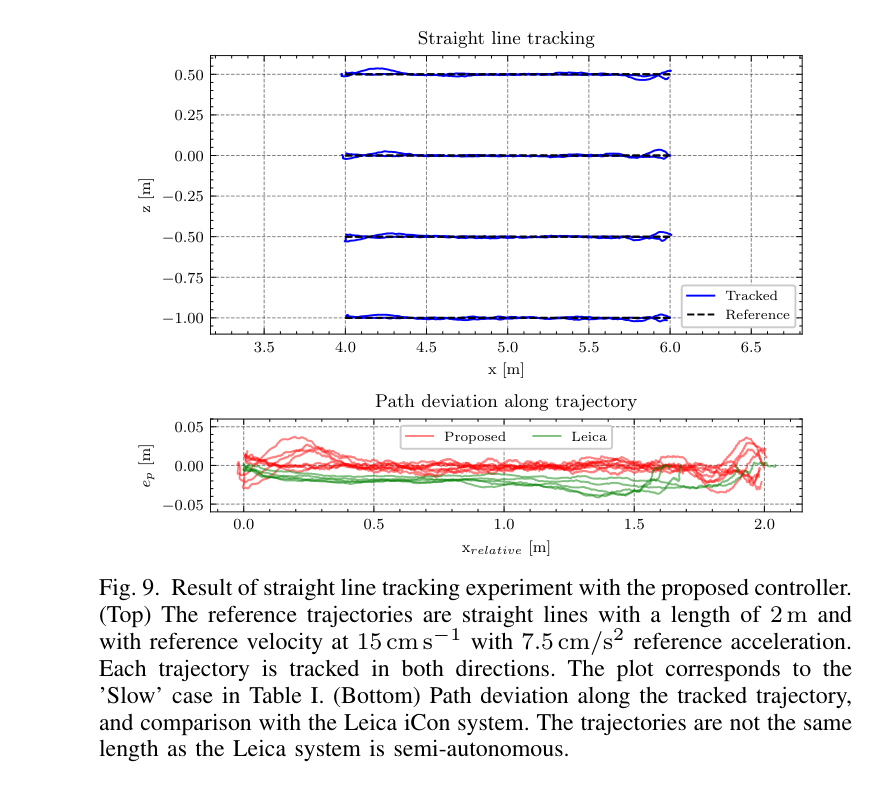
원문 Figure 9 · PDF p.8 — Fig. 9. Result of straight line tracking experiment with the proposed controller. (Top) The reference trajectories are straight lines with a length of 2 m and with reference velocity at 15 cm s−1 with 7.5 cm/s2 reference acceleration. Each trajectory is tracked in both directions. The plot corresponds to the ’Slow’ case in Table I. (Bottom) Path deviation along the tracked trajectory, and comparison with the Leica iCon system. The trajectories are not the same length as the Leica system is semi-autonomous.
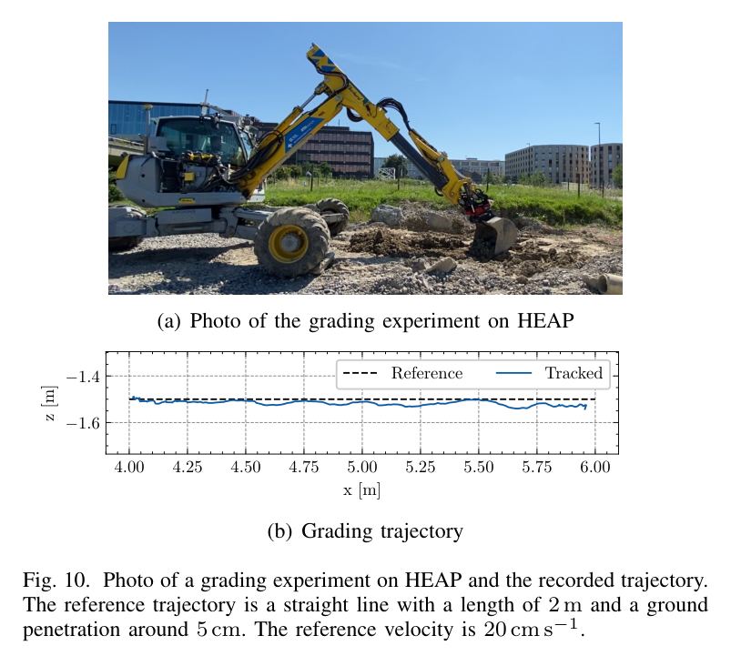
원문 Figure 10 · PDF p.8 — Fig. 10. Photo of a grading experiment on HEAP and the recorded trajectory. The reference trajectory is a straight line with a length of 2 m and a ground penetration around 5 cm. The reference velocity is 20 cm s−1.
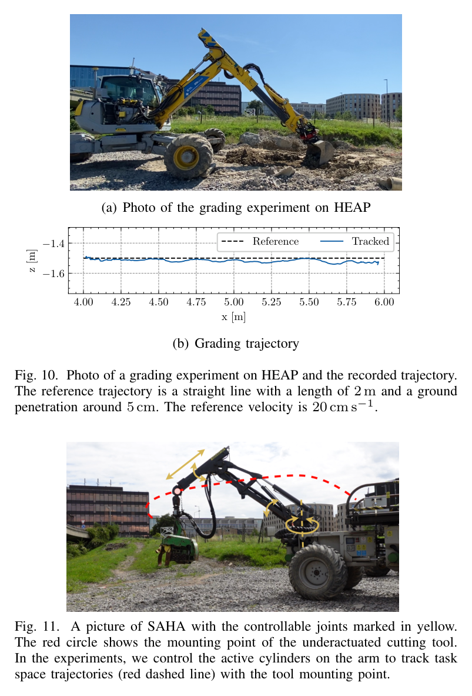
원문 Figure 11 · PDF p.8 — Fig. 11. A picture of SAHA with the controllable joints marked in yellow. The red circle shows the mounting point of the underactuated cutting tool. In the experiments, we control the active cylinders on the arm to track task space trajectories (red dashed line) with the tool mounting point.
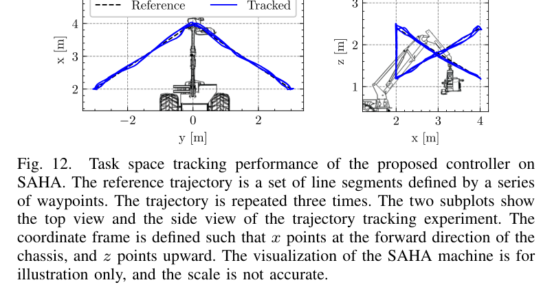
원문 Figure 12 · PDF p.8 — Fig. 12. Task space tracking performance of the proposed controller on SAHA. The reference trajectory is a set of line segments defined by a series of waypoints. The trajectory is repeated three times. The two subplots show the top view and the side view of the trajectory tracking experiment. The coordinate frame is defined such that x points at the forward direction of the chassis, and z points upward. The visualization of the SAHA machine is for illustration only, and the scale is not accurate.
핵심 결과 해석
시뮬레이션 2분 적응에서 제안법은 적응 없는 domain-randomized policy보다 모든 관절의 RMS 오차를 낮췄다. 개선 폭은 boom 관절 17.5%부터 pitch 관절 59.7%까지였다. 이는 하나의 고정 policy가 분포 전체를 절충하는 것보다, rollout에 맞춰 z를 찾는 것이 dead zone과 지연 차이를 실제 제어에 활용함을 보여준다.
HEAP에서는 관절별 적응이 10분 안에 끝났다. 지름 1.5 m 원형 경로를 평균 40 cm/s, 가속도 5 cm/s² reference로 실행했을 때 평균 말단 위치오차는 4.1 cm였다. 2 m 직선에서 제안법의 평균 경로오차는 slow 0.69 cm, fast 1.16 cm이고 최대오차는 각각 3.73, 5.91 cm였다. fast 조건 평균속도는 20 cm/s, 최대속도는 25 cm/s였고, 평균 각속도는 0.007 rad/s였다.
5 cm 깊이 grading은 평균 trajectory error 3.62 cm, straight-line deviation 3.38 cm를 보였다. 자유공간 궤적보다 오차가 커진 이유는 지면 힘이 빠르게 바뀌고 load sensing이 불완전하기 때문이다. 논문은 더 깊은 grading과 실제 excavation에서는 이 문제가 더 심해 현재 controller가 충분하지 않다고 명시한다. SAHA는 단 8분 적응 뒤 최대 0.6 m/s waypoint trajectory에서 평균 위치오차 5.39 cm를 기록해, 다른 질량·회로·backlash에도 이전 가능성을 보였다.
정량 결과
평가 항목
정량 결과
조건·맥락
원문 근거
시뮬레이션 RMS 오차 개선
17.5%~59.7%
domain-randomized policy 대비, boom에서 pitch 관절 범위
PDF p.6
HEAP 적응 시간
10분 이내
안전을 위해 관절별 개별 online adaptation
PDF p.7
원형 경로 평균 오차
4.1 cm
지름 1.5 m, reference 평균속도 40 cm/s
PDF p.7
2 m 직선 평균 경로오차
slow 0.69 cm, fast 1.16 cm
제안 controller, 평균속도 13.04 cm/s 및 20 cm/s
PDF p.8
grading 오차
trajectory 3.62 cm, straightness 3.38 cm
2 m, 5 cm penetration, 20 cm/s
PDF p.8
SAHA 적응 및 위치오차
8분, 평균 5.39 cm
4.5톤 장비 waypoint trajectory
PDF p.8
실패 사례와 경계조건
지면력처럼 빠르게 변하는 외력이 존재하면 자유공간에서 적응한 latent와 단순 부하모델만으로 추종오차가 증가한다.
깊은 grading이나 excavation은 불완전한 load sensing 때문에 현재 방식의 적용범위를 벗어난다.
질량 변화가 크고 고속·고가속인 동작에서는 저차 모델의 ‘고유진동수 변화 30% 미만’ 근사가 성립하지 않을 수 있다.
배치 중 관측 데이터가 특정 운용구간에 편향되면 energy adaptation이 전체 속도영역을 올바르게 식별하지 못할 수 있다.
5.한계 및 향후 연구
현재 한계
대상은 저속 관절 속도제어이며, 펌프 공유와 다관절 동시작동에 의한 유압 결합을 명시적으로 모델링하지 않는다.
부하압·펌프압 정보가 충분히 들어가지 않아 토양 접촉과 큰 관성하중의 빠른 변화에 취약하다.
online 단계는 latent만 조정하므로 실제 장비가 학습 randomization 범위 밖이면 policy 자체가 표현하지 못하는 응답을 회복할 수 없다.
장기 온도변화·마모·노화에 대한 며칠 또는 수개월 지속평가와 안전경계 검증이 없다.
향후 연구
실린더 양측 압력과 펌프 공급압을 관측에 넣어 접촉력과 공유 유압계통의 변화를 직접 추정한다.
excavation과 깊은 grading을 포함하는 contact-rich 학습분포 및 안전 제약형 적응으로 확장한다.
latent 식별뿐 아니라 보수적으로 policy를 계속 개선하는 continual/online learning을 도입해 노화와 유온 변화를 추종한다.
여러 관절을 동시에 자극하는 식별 trajectory와 장기 실차 시험으로 다관절 coupling 및 편향 데이터 문제를 평가한다.
6.한마디로 정리
핵심 방법은?
무작위 저차 유압모델에서 16D latent 조건부 PPO policy를 학습하고, convex energy가 최근 rollout에 맞는 latent를 1초마다 추정한다.
핵심 결과는?
HEAP은 10분 이내 적응 후 2 m 직선 평균 0.69~1.16 cm, SAHA는 8분 적응 후 평균 5.39 cm 오차를 보였다.
한계는?
저속 자유공간 근사와 제한된 load sensing 때문에 빠른 다관절 유압 coupling, 깊은 grading, excavation까지는 일반화되지 않는다.
이 controller는 상위 작업정책과 실기체 사이의 ‘장비 차이 흡수층’으로 해석할 수 있다. bucket-filling RL이나 trajectory optimizer가 원하는 관절 속도를 내더라도, 실제 pilot delay와 dead zone이 달라지면 작업 궤적이 깨진다. latent adaptation을 저수준에 두면 상위 정책을 재학습하지 않고도 장비 교체·유온 변화에 따른 속도 응답을 일정하게 만들 수 있다.
다만 토양접촉에서 드러난 한계를 고려하면 굴착정책과 완전히 분리해서는 안 된다. 압력·작업력 정보를 공유해 ‘유압장비 고유 지연’과 ‘토양 때문에 생긴 외력’을 구분하고, 적응 불확실성이 클 때 상위 계획기가 속도와 관입깊이를 제한하는 구조가 필요하다.
Reinforcement Learning-Based Bucket-Filling의 4개 관절 속도명령 아래에 배치하면 sim-to-real tracking gap을 줄일 수 있다.
Towards Autonomous Excavation Planning의 반복 cycle 사이에 짧은 진단동작을 넣어 유온·마모에 따른 latent를 갱신할 수 있다.
Hybrid Motion Planning thesis의 MPC/VMC가 만드는 reference를 더 정확히 실행하도록 pilot-level 적응기를 결합할 수 있다.
압력 기반 접촉상태와 latent 공분산을 안전 제약에 제공하면 학습분포 밖 장비에서 자동으로 속도를 낮추는 supervisory control이 가능하다.
7.전체 그림·표
본문 핵심 위치에 배치하지 않은 원문 Figure와 Table을 원문 페이지 순서로 수록한다.
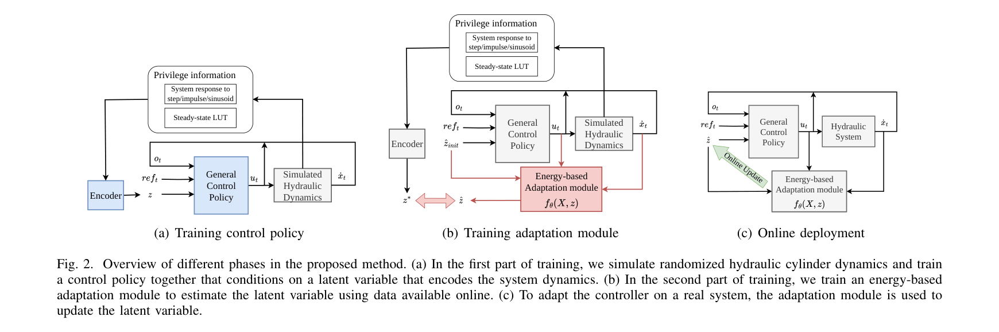
원문 Figure 2 · PDF p.4 — Fig. 2. Overview of different phases in the proposed method. (a) In the first part of training, we simulate randomized hydraulic cylinder dynamics and train a control policy together that conditions on a latent variable that encodes the system dynamics. (b) In the second part of training, we train an energy-based adaptation module to estimate the latent variable using data available online. (c) To adapt the controller on a real system, the adaptation module is used to update the latent variable.
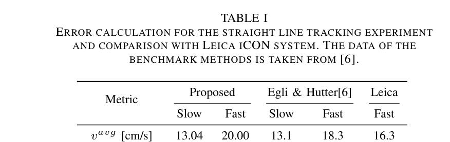
원문 Table I · PDF p.8 — TABLE I ERROR CALCULATION FOR THE STRAIGHT LINE TRACKING EXPERIMENT AND COMPARISON WITH LEICA ICON SYSTEM. THE DATA OF THE BENCHMARK METHODS IS TAKEN FROM [6].